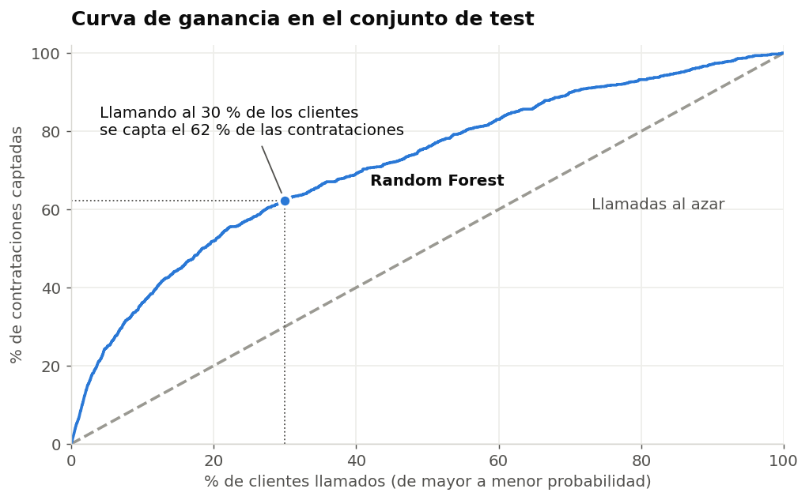
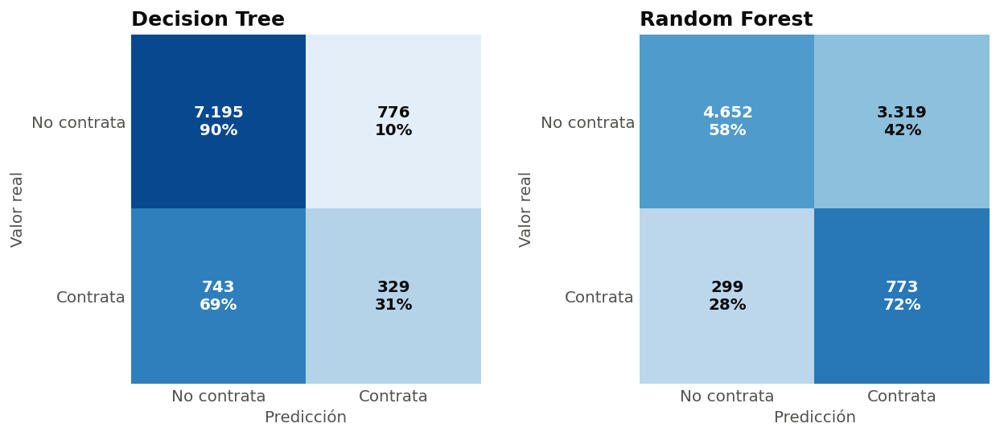
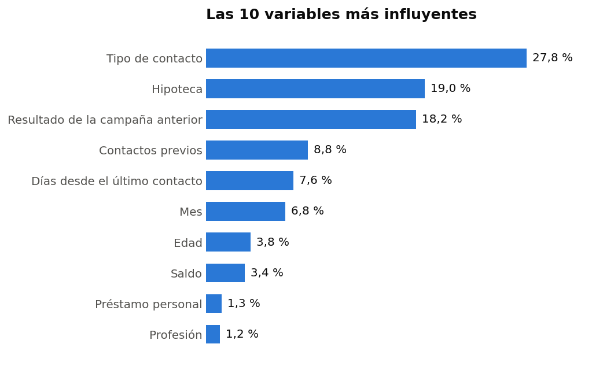

import pandas as pd
from sklearn.pipeline import Pipeline
from sklearn.compose import ColumnTransformer
from sklearn.impute import SimpleImputer
from sklearn.preprocessing import MinMaxScaler, OneHotEncoder
from sklearn.model_selection import train_test_split
from sklearn.tree import DecisionTreeClassifier
from sklearn.ensemble import RandomForestClassifier
from sklearn.metrics import classification_report, confusion_matrix
import matplotlib.pyplot as plt
import seaborn as snsProyecto de marketing bancario
Objetivo: de predecir si un cliente contratará un servicio
Importamos todas las librerías que vamos a necesitar:
Fuente de datos: Bank Marketing (UCI Machine Learning Repository), fichero bank-full.csv (dentro de bank.zip). Licencia CC BY 4.0.
Referencia: S. Moro, P. Cortez y P. Rita (2014). A Data-Driven Approach to Predict the Success of Bank Telemarketing. Decision Support Systems.
En caso de querer ejecutar vd. mismo el notebook, basta con agregar el fichero ‘bank-full.csv’ junto al notebook
Cargar los datos:
- Indicamos que los datos vienen separados por ; (no por , como suele ser habitual)
df = pd.read_csv("bank-full.csv", sep=";")Visualizacion en consola de una muestra de los datos:
#print("dataframe_head:\n", df.head())
#print("\n")
df.head()| age | job | marital | education | default | balance | housing | loan | contact | day | month | duration | campaign | pdays | previous | poutcome | y | |
|---|---|---|---|---|---|---|---|---|---|---|---|---|---|---|---|---|---|
| 0 | 58 | management | married | tertiary | no | 2143 | yes | no | unknown | 5 | may | 261 | 1 | -1 | 0 | unknown | no |
| 1 | 44 | technician | single | secondary | no | 29 | yes | no | unknown | 5 | may | 151 | 1 | -1 | 0 | unknown | no |
| 2 | 33 | entrepreneur | married | secondary | no | 2 | yes | yes | unknown | 5 | may | 76 | 1 | -1 | 0 | unknown | no |
| 3 | 47 | blue-collar | married | unknown | no | 1506 | yes | no | unknown | 5 | may | 92 | 1 | -1 | 0 | unknown | no |
| 4 | 33 | unknown | single | unknown | no | 1 | no | no | unknown | 5 | may | 198 | 1 | -1 | 0 | unknown | no |
Filas y Columnas de dataframe
Mostramos tb los tipos de datos
print("numero de filas: ", df.shape[0]) # tb vale len(df)
print("numero de columnas: ", df.shape[1])
print("\n")
print("df_types:\n", df.dtypes)
print("\n")numero de filas: 45211
numero de columnas: 17
df_types:
age int64
job str
marital str
education str
default str
balance int64
housing str
loan str
contact str
day int64
month str
duration int64
campaign int64
pdays int64
previous int64
poutcome str
y str
dtype: object
Mostramos las columnas (features)
( incluída la columna objetivo ‘y’ )
print("df_columns:\n ", df.columns)
print("\n")df_columns:
Index(['age', 'job', 'marital', 'education', 'default', 'balance', 'housing',
'loan', 'contact', 'day', 'month', 'duration', 'campaign', 'pdays',
'previous', 'poutcome', 'y'],
dtype='str')
Mostramos info del dataframe:
df.info()<class 'pandas.DataFrame'>
RangeIndex: 45211 entries, 0 to 45210
Data columns (total 17 columns):
# Column Non-Null Count Dtype
--- ------ -------------- -----
0 age 45211 non-null int64
1 job 45211 non-null str
2 marital 45211 non-null str
3 education 45211 non-null str
4 default 45211 non-null str
5 balance 45211 non-null int64
6 housing 45211 non-null str
7 loan 45211 non-null str
8 contact 45211 non-null str
9 day 45211 non-null int64
10 month 45211 non-null str
11 duration 45211 non-null int64
12 campaign 45211 non-null int64
13 pdays 45211 non-null int64
14 previous 45211 non-null int64
15 poutcome 45211 non-null str
16 y 45211 non-null str
dtypes: int64(7), str(10)
memory usage: 5.9 MBValores generales de dataframe (describe):
df.describe()| age | balance | day | duration | campaign | pdays | previous | |
|---|---|---|---|---|---|---|---|
| count | 45211.000000 | 45211.000000 | 45211.000000 | 45211.000000 | 45211.000000 | 45211.000000 | 45211.000000 |
| mean | 40.936210 | 1362.272058 | 15.806419 | 258.163080 | 2.763841 | 40.197828 | 0.580323 |
| std | 10.618762 | 3044.765829 | 8.322476 | 257.527812 | 3.098021 | 100.128746 | 2.303441 |
| min | 18.000000 | -8019.000000 | 1.000000 | 0.000000 | 1.000000 | -1.000000 | 0.000000 |
| 25% | 33.000000 | 72.000000 | 8.000000 | 103.000000 | 1.000000 | -1.000000 | 0.000000 |
| 50% | 39.000000 | 448.000000 | 16.000000 | 180.000000 | 2.000000 | -1.000000 | 0.000000 |
| 75% | 48.000000 | 1428.000000 | 21.000000 | 319.000000 | 3.000000 | -1.000000 | 0.000000 |
| max | 95.000000 | 102127.000000 | 31.000000 | 4918.000000 | 63.000000 | 871.000000 | 275.000000 |
Checkeamos si hay datos corruptos (vacíos / NaN)…
print("Algun valor NaN o vacio? ", df.isnull().values.any())
print("Suma de valores NaN o vacio? ", df.isnull().values.sum())
print("\n")Algun valor NaN o vacio? False
Suma de valores NaN o vacio? 0
Asignamos algunas constates:
RANDOM_STATE = 22 # Fijada semilla aleatoriaSeparación de variables:
- X Features
- y Target
Excluimos duration (duración de la llamada): solo se conoce cuando la llamada ya ha terminado, así que no está disponible al decidir a quién llamar. Usarla sería data leakage e inflaría las métricas, como advierte la documentación del dataset.
X = df.drop(columns=["y", "duration"])
y = df["y"]
y.head()0 no
1 no
2 no
3 no
4 no
Name: y, dtype: strSeparar columnas:
- numeric_features columnas de tipo numérico
- categorical_features columnas de tipo categórico
numeric_features = X.select_dtypes(include=["int64", "float64"]).columns
categorical_features = X.select_dtypes(include=["object", "string"]).columns
print("\nNumeric_features:\n", numeric_features.to_list())
print("\nCat_features:\n", categorical_features.to_list())
Numeric_features:
['age', 'balance', 'day', 'campaign', 'pdays', 'previous']
Cat_features:
['job', 'marital', 'education', 'default', 'housing', 'loan', 'contact', 'month', 'poutcome']Separación de los datos en: Train / Test
X_train, X_test, y_train, y_test = train_test_split(X, y, test_size=0.2, random_state=RANDOM_STATE)Preprocesamiento (numéricas)
numeric_transformer = Pipeline([
("scaler", MinMaxScaler())
])Preprocesamiento (categóricas)
categorical_transformer = Pipeline([
("imputer", SimpleImputer(strategy="most_frequent")),
("one_hot_encoder", OneHotEncoder(handle_unknown="ignore"))
])Transformación (numéricas y categóricas)
preprocessor = ColumnTransformer([
("num", numeric_transformer, numeric_features),
("cat", categorical_transformer, categorical_features)
])Creamos el model Decision Tree, asignándo estos hiperparámetros:
- param 1: Aplicamos el parámetro clave: class_weight=“balanced” para manejar el desbalanceo
- param 2: random_state=22 (para que el aleatorio sea siempre igual en cada ejecucion)
dt_model = Pipeline([
("prep", preprocessor),
("classifier", DecisionTreeClassifier(class_weight="balanced", random_state=22))
])Creamos el model Random Forest, asignando estos hiperparámetros:
- param 1: n_estimators entre 100-200 (suficientes para un buen resultado)
- param 2 : entre 0.2-0.5
- param 3: Aplicamos balanced para manejar el desbalanceo
- param 4: Random_state 22 para que NO cambie el aleatorio en cada ejecucion
rf_model = Pipeline([
("prep", preprocessor),
("classifier", RandomForestClassifier(n_estimators=150, min_samples_split=0.3, class_weight="balanced", random_state=22))
])Creamos una función
Para entrenar los diferentes modelos
entrenar_modelo()
def entrenar_modelo(name, model):
"""
Función para entrenar los diferentes modelos:
- Recibe como parametros: una descripción del modelo y el propio modelo
- Devuelve: una variable con las predicciones 'y_pred'
"""
# Entrenar modelo:
model.fit(X_train, y_train)
# Predicciones:
y_pred = model.predict(X_test)
# Metricas (clasification_report):
print("=" * 55)
print(f"--- MÉTRICAS {name} ---")
print("=" * 55)
print(classification_report(y_test, y_pred))
# Metricas (confusion-matrix):
print(f"--- CONFUSION MATRIX ({name}) ---")
print(confusion_matrix(y_test, y_pred))
print("\n")
return y_pred
Invocamos la función creada anteriormente:
(Una vez por cada modelo que queramos entrenar)
entrenar_modelo("DECISION TREE", dt_model)
entrenar_modelo("RANDOM FOREST", rf_model)=======================================================
--- MÉTRICAS DECISION TREE ---
=======================================================
precision recall f1-score support
no 0.91 0.90 0.90 7971
yes 0.30 0.31 0.30 1072
accuracy 0.83 9043
macro avg 0.60 0.60 0.60 9043
weighted avg 0.83 0.83 0.83 9043
--- CONFUSION MATRIX (DECISION TREE) ---
[[7195 776]
[ 743 329]]
=======================================================
--- MÉTRICAS RANDOM FOREST ---
=======================================================
precision recall f1-score support
no 0.94 0.58 0.72 7971
yes 0.19 0.72 0.30 1072
accuracy 0.60 9043
macro avg 0.56 0.65 0.51 9043
weighted avg 0.85 0.60 0.67 9043
--- CONFUSION MATRIX (RANDOM FOREST) ---
[[4652 3319]
[ 299 773]]
array(['no', 'no', 'no', ..., 'no', 'yes', 'no'],
shape=(9043,), dtype=object)Conclusión Decision-Tree:
Aún con el parámetro class_weight=balanced, al modelo le cuesta distinguir patrones de contratación (f1-score del 30 %).
Solo tiene buen resultado en patrones de no contratación, al tener muchos más ejemplos de los que aprender (f1-score del 90 %).
En la matriz de confusión encuentra a 329 clientes que contratan y deja “escapar” a 743.
Conclusión Random-Forest:
El Decision Tree tiene mejor Accuracy (83 % frente a 60 %) y ambos empatan en F1-Score (0,30), pero para una campaña de marketing el modelo más útil es el Random Forest: su Recall del 72 % capta a la mayoría de los clientes interesados.
En la matriz de confusión capta a 773 clientes y deja “escapar” a 299. El coste son 3.319 llamadas a clientes que no contratarán: su precisión es del 19 %, frente al 11,9 % de contrataciones en el conjunto de test si se llama al azar.
Como devuelve una probabilidad, también permite priorizar: llamando solo al 30 % de clientes con mayor probabilidad se capta el 62 % de las contrataciones, aproximadamente el doble que llamando al azar.
Visualización de resultados
Configuramos un estilo común para las gráficas:
import numpy as np
AZUL, GRIS, TINTA, TINTA_2 = "#2a78d6", "#9a9992", "#0b0b0b", "#52514e"
plt.rcParams.update({
"figure.dpi": 130, "font.size": 11, "text.color": TINTA,
"axes.edgecolor": "#d8d7d2", "axes.labelcolor": TINTA_2,
"xtick.color": TINTA_2, "ytick.color": TINTA_2,
"axes.spines.top": False, "axes.spines.right": False,
"axes.titlelocation": "left", "axes.titleweight": "bold", "axes.titlesize": 14,
})Curva de ganancia
Si el banco ordena a los clientes por probabilidad de contratar (Random Forest), ¿qué parte de las contrataciones consigue llamando solo a una parte de ellos?
proba = rf_model.predict_proba(X_test)[:, list(rf_model.classes_).index("yes")]
orden = np.argsort(-proba, kind="stable")
aciertos = (y_test.to_numpy()[orden] == "yes").cumsum()
pct_clientes = np.arange(1, len(orden) + 1) / len(orden) * 100
pct_contrataciones = aciertos / aciertos[-1] * 100
corte = 30
valor_corte = np.interp(corte, pct_clientes, pct_contrataciones)
fig, ax = plt.subplots(figsize=(8, 5))
ax.plot([0, 100], [0, 100], color=GRIS, lw=2, ls="--")
ax.plot(pct_clientes, pct_contrataciones, color=AZUL, lw=2)
ax.plot([corte, corte], [0, valor_corte], color=TINTA_2, lw=1, ls=":")
ax.plot([0, corte], [valor_corte, valor_corte], color=TINTA_2, lw=1, ls=":")
ax.scatter([corte], [valor_corte], s=70, color=AZUL, edgecolor="white", linewidth=2, zorder=3)
ax.annotate(f"Llamando al {corte} % de los clientes\nse capta el {valor_corte:.0f} % de las contrataciones",
(corte, valor_corte), xytext=(4, 79), color=TINTA,
arrowprops=dict(arrowstyle="-", color=TINTA_2, lw=1, shrinkA=4, shrinkB=6))
ax.text(42, 66, "Random Forest", color=TINTA, weight="bold")
ax.text(73, 60, "Llamadas al azar", color=TINTA_2)
ax.set(xlim=(0, 100), ylim=(0, 102), xlabel="% de clientes llamados (de mayor a menor probabilidad)",
ylabel="% de contrataciones captadas")
ax.grid(color="#eeeeea", lw=1); ax.set_axisbelow(True)
ax.set_title("Curva de ganancia en el conjunto de test", pad=14)
plt.tight_layout(); plt.show()
print(f"Top {corte} %: {valor_corte:.1f} % de las contrataciones")
Top 30 %: 62.2 % de las contratacionesMatrices de confusión
El color indica el porcentaje dentro de cada clase real.
fig, axes = plt.subplots(1, 2, figsize=(10, 4.3))
etiquetas = ["No contrata", "Contrata"]
for ax, (nombre, modelo) in zip(axes, [("Decision Tree", dt_model), ("Random Forest", rf_model)]):
cm = confusion_matrix(y_test, modelo.predict(X_test), labels=["no", "yes"])
pct = cm / cm.sum(axis=1, keepdims=True)
ax.imshow(pct, cmap="Blues", vmin=0, vmax=1)
for i in range(2):
for j in range(2):
ax.text(j, i, f"{cm[i, j]:,}".replace(",", ".") + f"\n{pct[i, j]:.0%}", ha="center", va="center",
color="white" if pct[i, j] > .55 else TINTA, weight="bold")
ax.set_xticks([0, 1], etiquetas); ax.set_yticks([0, 1], etiquetas)
ax.set(xlabel="Predicción", ylabel="Valor real"); ax.set_title(nombre)
ax.tick_params(length=0)
for s in ax.spines.values(): s.set_visible(False)
plt.tight_layout(); plt.show()
Variables más influyentes (Random Forest)
Sumamos la importancia de las columnas one-hot de cada variable original.
NOMBRES = {"age": "Edad", "job": "Profesión", "marital": "Estado civil", "education": "Educación",
"default": "Impago de crédito", "balance": "Saldo", "housing": "Hipoteca", "loan": "Préstamo personal",
"contact": "Tipo de contacto", "day": "Día del mes", "month": "Mes", "campaign": "Contactos en esta campaña",
"pdays": "Días desde el último contacto", "previous": "Contactos previos",
"poutcome": "Resultado de la campaña anterior"}
columnas = rf_model.named_steps["prep"].get_feature_names_out()
importancias = rf_model.named_steps["classifier"].feature_importances_
def variable_original(col):
tipo, resto = col.split("__", 1)
return resto if tipo == "num" else next(v for v in categorical_features if resto.startswith(v + "_"))
imp = pd.Series(importancias, index=[variable_original(c) for c in columnas]).groupby(level=0).sum()
top = imp.sort_values(ascending=False).head(10).sort_values()
fig, ax = plt.subplots(figsize=(8, 5))
ax.barh([NOMBRES[v] for v in top.index], top * 100, color=AZUL, height=.62)
for i, v in enumerate(top * 100):
ax.text(v + .5, i, f"{v:.1f} %".replace(".", ","), va="center", color=TINTA)
ax.set_xlim(0, top.max() * 118); ax.xaxis.set_visible(False)
ax.spines["bottom"].set_visible(False); ax.spines["left"].set_visible(False); ax.tick_params(length=0)
ax.set_title("Las 10 variables más influyentes", pad=14)
plt.tight_layout(); plt.show()
print((imp.sort_values(ascending=False) * 100).round(1).to_string())
contact 27.8
housing 19.0
poutcome 18.2
previous 8.8
pdays 7.6
month 6.8
age 3.8
balance 3.4
loan 1.3
job 1.2
marital 0.9
campaign 0.8
education 0.3
day 0.2
default 0.0